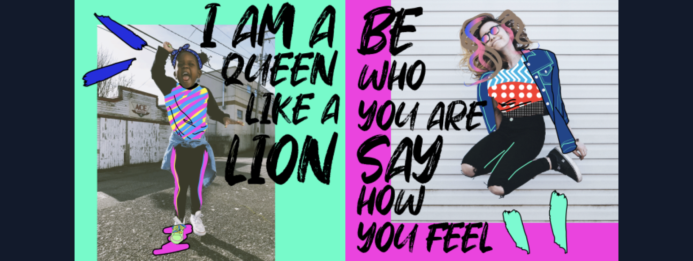
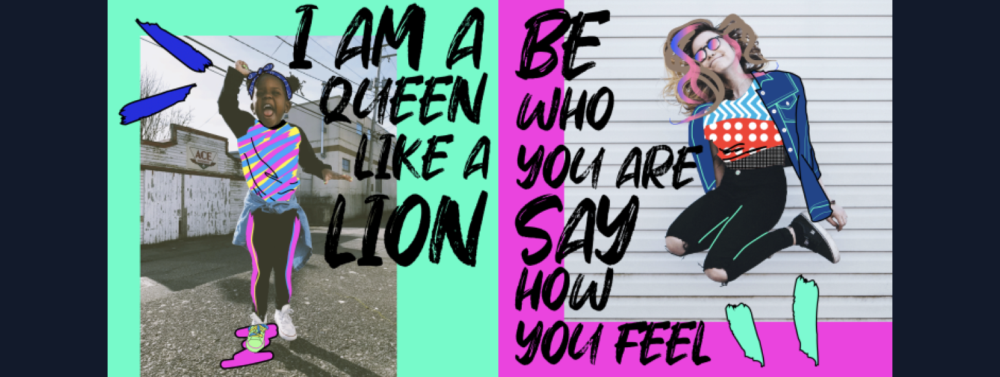
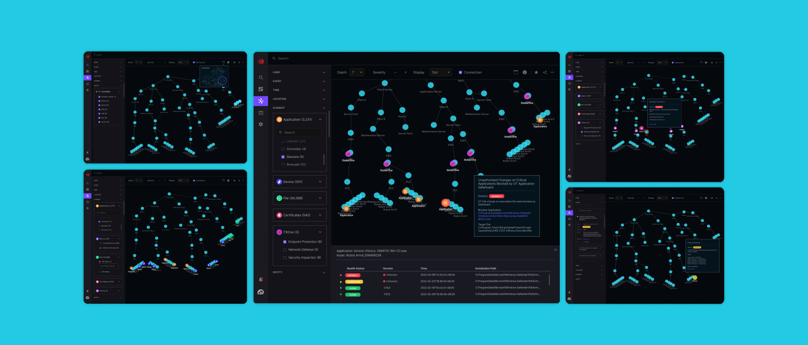
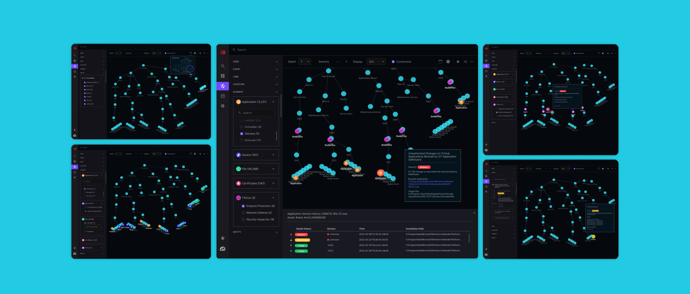
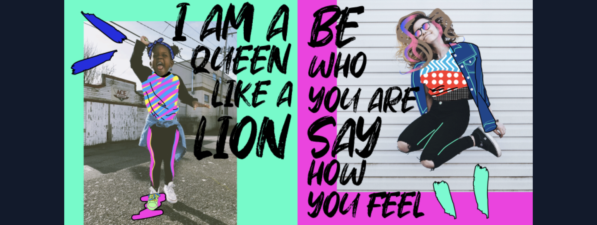
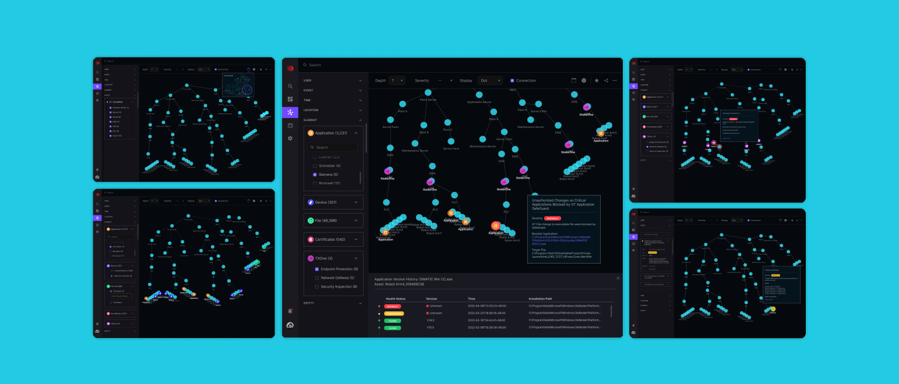

 



These side projects are ones I've taken on to enrich my skills and broaden my experience. The primary reason for engaging in these projects is my passion for working across various industries. Additionally, these projects allow me to oversee the entire process, from initial ideation to final delivery. I am involved in every aspect, including product positioning, identifying marketing opportunities, conducting user research, analyzing data, crafting UX solutions, and completing the final UI design. This comprehensive involvement helps me grow both as a designer and a strategist.

